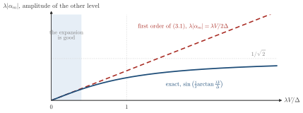
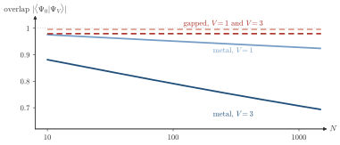

Advanced Quantum Materials 2027 · All lectures · Lecture notes
Session 3. Topological Band Structure Theory
3.3 Where perturbation theory breaks down
When can we trust the expansion (3.1)? We will now see that the perturbation has to be small compared with the distance between the levels. In three important cases of this course this is not true, and no finite order of the expansion gives the answer.
\[|n\rangle_\lambda = |n\rangle + \lambda \sum_{m \neq n} \alpha_m\, |m\rangle + \mathcal{O}(\lambda^2), \qquad \alpha_m = \frac{\langle m|V|n\rangle}{\varepsilon_n - \varepsilon_m}. \tag{3.1}\]
This is the first-order result of Section 3.2. A perturbation \(\lambda V\) mixes the other states \(|m\rangle\) of the unperturbed Hamiltonian \(H_0\) into the state \(|n\rangle\), with the amplitude \(\lambda\alpha_m\). The energies \(\varepsilon_n\) and \(\varepsilon_m\) are the ones of \(H_0\).
Before we use (3.1), we should say when it fails, because several of the most important phenomena in this course appear in this failure. The expansion (3.1) assumes that we are in the perturbative regime, where a small change in the input, which is the strength of the perturbation, gives a small change in the output. This is not always the case. We name three cases now, because we will see each of them in detail later in the course. The simplest example is a system of two levels, which is shown in Schematic 3.3.

The first-order result (3.1) needs every amplitude in it to be small,
\[\lambda\,|\langle m|V|n\rangle| \ll |\varepsilon_n-\varepsilon_m| \qquad \text{for every } m\neq n.\]
The perturbation has to be small compared with the distance to every other level, and a gap protects the expansion. In a metal this condition is not enough, since the number of states with a small amplitude grows with the size of the system.
An impurity in a metal gives rise to the orthogonality catastrophe. In a large metal the many-body ground state after the perturbation becomes orthogonal to the original ground state, even for a very small perturbation. So no Taylor expansion of finite order in \(\lambda\) can connect the two.
A quantum spin, which is a local magnetic moment, coupled to a metal gives rise to the Kondo effect. The relevant energy scale, which is the Kondo temperature, is a non-perturbative function of the coupling constant, and no order of perturbation theory in this coupling gives it. We will study the Kondo impurity and the Kondo lattice in detail in Section 8.11, and here we only mention it as a first sign that ordinary perturbation theory has a strict limit.
Superconductivity is also non-perturbative, since the BCS gap does not appear at any finite order in the interaction strength if we start from the normal state. In Session 5 we will see that the gap comes instead from a mean-field Hamiltonian, the Bogoliubov-de Gennes Hamiltonian of Section 5.8.
We can see the first of these cases in a small calculation. We take a ring at half filling, we add an impurity on one site, and we compute the overlap between the two ground states. For a metal the overlap keeps falling when the ring grows, and for the same impurity in an insulator it does not, as we see in Schematic 3.4.

For every model that we build in this session we stay inside the regime where (3.1) holds. For now, it is enough to know that this is not always the case.
We put an impurity of strength \(\lambda\) in a large metal. The new ground state is orthogonal to the old one. Why can no finite order of the expansion in \(\lambda\) describe this?
Show the answers
- A. ✗ False
This is false. An impurity also breaks the translation symmetry of an insulator. Take a ring with hopping \(1\), a staggered potential \(\pm1\) and an impurity of strength \(1\). The overlap of the two ground states is \(0.996\) for \(10\) sites and also for \(1026\) sites, so perturbation theory works there.
- B. ✓ True
This is true. A truncated expansion differs from the old ground state only by terms that are small for small \(\lambda\). Its overlap with the old state stays close to one, so it never reaches a state that is orthogonal to it.
- C. ✗ False
This is false. Take a ring with hopping \(1\) and no gap, and an impurity of strength \(0.1\). Every term of the series is small, and the overlap still falls, from \(0.9997\) for \(10\) sites to \(0.9991\) for \(1026\) sites, and it does not stop. The problem is the missing gap and not the strength.
3.4 The Hall conductivity from linear response
How does a current that flows across an applied voltage follow from the perturbed states? We will now see that it is given by matrix elements of the velocity between filled and empty bands, divided by the square of their energy difference.
Now we apply (3.1) to the measurement that will bring us to topology, which is the transverse conductivity, also called the Hall conductivity. We take a two-dimensional material, apply a voltage in the \(y\) direction, and ask what current flows in the \(x\) direction. In momentum space, a voltage in \(y\) enters as a perturbation proportional to \(\partial H/\partial k_y\), since it shifts \(k_y\) through the Peierls substitution. The current operator in the \(x\) direction is, up to the electron charge, the group-velocity operator \(\partial H/\partial k_x\). Both are the kind of matrix element that appears in (3.1).
When we put (3.1) into the definition of the Hall conductivity, we obtain an expression with two velocity operators and an energy denominator. This is the Kubo formula.
The Hall conductivity for filled bands \(n\) and empty bands \(m\) is
\[\sigma_{xy} \;\propto\; \sum_{n\ \text{filled}} \sum_{m\ \text{empty}} \int_{\text{BZ}} \frac{d^2k}{(2\pi)^2}\; \frac{\langle n|\partial_{k_x}H|m\rangle\langle m|\partial_{k_y}H|n\rangle - (x\leftrightarrow y)} {(\varepsilon_n - \varepsilon_m)^2}. \tag{3.2}\]
The states \(|n\rangle\) and \(|m\rangle\) are the Bloch states at the momentum \(k\), with the energies \(\varepsilon_n\) and \(\varepsilon_m\), and \(\partial_{k_x}H\) is the velocity operator along \(x\). The numerator changes sign when we exchange \(x\) and \(y\), and the constant in front has the size \(e^2/\hbar\).
The steps From first-order perturbation theory (3.1) to the Kubo formula (3.2)
We do it first for one filled band \(n\) at one momentum \(k\). We write \(\partial_\mu\) for \(\partial_{k_\mu}\), with \(\mu=x,y\), and \(|n\rangle\) and \(|m\rangle\) for the Bloch states at this momentum.
The first step is the perturbation. An electric field \(E\) along \(y\) gives an electron the potential energy \(eEy\), so in (3.1) we have \(\lambda V=eE\,y\), and we need the matrix elements of the position \(y\) between two bands. The velocity is the rate of change of the position, \(v_y=(i/\hbar)[H,y]\), and for Bloch states \(\hbar v_y\) is \(\partial_y H\). Between two eigenstates the commutator gives the energy difference, so
\[\langle m|\partial_y H|n\rangle = i\,\langle m|[H,y]|n\rangle = i\,(\varepsilon_m-\varepsilon_n)\,\langle m|y|n\rangle, \qquad\text{so}\qquad \langle m|y|n\rangle = \frac{i\,\langle m|\partial_y H|n\rangle}{\varepsilon_n-\varepsilon_m}.\]
This is the reason why the voltage enters as a perturbation proportional to \(\partial H/\partial k_y\). The relation has its own factor \(1/(\varepsilon_n-\varepsilon_m)\) and a factor \(i\).
The second step is to put this perturbation into (3.1), which gives the state in the field,
\[|n\rangle_E = |n\rangle + ieE\sum_{m\neq n}\frac{\langle m|\partial_y H|n\rangle}{(\varepsilon_n-\varepsilon_m)^2}\,|m\rangle.\]
The denominator is now a square. One power is the denominator of (3.1), and the other one comes from the matrix element of the position.
The third step is the velocity along \(x\) in this state, which is the expectation value of \(\partial_x H/\hbar\). To first order in \(E\) we get
\[\hbar\langle v_x\rangle = \partial_x\varepsilon_n + ieE\sum_{m\neq n}\frac{\langle n|\partial_x H|m\rangle\langle m|\partial_y H|n\rangle - \langle n|\partial_y H|m\rangle\langle m|\partial_x H|n\rangle}{(\varepsilon_n-\varepsilon_m)^2}.\]
The first term is \(\langle n|\partial_x H|n\rangle\), the slope of the band, which is the velocity without the field. The second term comes from the two cross terms between \(|n\rangle\) and the states that the field mixes in. The two cross terms are complex conjugates of each other. The complex conjugate of the first product is the product with \(x\) and \(y\) exchanged, and the factor \(i\) gives it a minus sign.
The fourth step is the sum over all the momenta of the filled band. The band is periodic in \(k\), so the integral of the slope \(\partial_x\varepsilon_n\) over the Brillouin zone is zero, meaning that a filled band has no current without the field. The current density is the charge times the sum of the velocities,
\[j_x = -e\int_{\text{BZ}}\frac{d^2k}{(2\pi)^2}\,\langle v_x\rangle,\]
and only the second term is left, which is proportional to \(E\). The Hall conductivity is the ratio \(j_x/E\).
The last step is to take several filled bands. We sum over the filled bands \(n\), and \(m\) runs over all the other bands. When \(n\) and \(m\) are both filled, the pair appears twice, once as \((n,m)\) and once as \((m,n)\). The numerator changes sign when we exchange \(n\) and \(m\), and the denominator does not, so these two terms cancel. Only the pairs with \(m\) empty are left, which is (3.2).
What is left is the constant in front of (3.2). For the voltage along \(y\) and the current along \(x\) of this section, the factors above give \(-ie^2/\hbar\). The factor \(i\) makes the result real, since the numerator is a number minus its complex conjugate, which is purely imaginary. The sign of the charge does not matter, since the charge enters twice, once in the potential energy and once in the current. The sign of the constant changes when we exchange \(x\) and \(y\), meaning the current along \(y\) for a voltage along \(x\), and this is the only choice here that changes it. Section 3.5 uses this constant together with the Berry curvature.
At this point the expression still depends explicitly on the band energies through the denominator, so it seems that it should depend on all the details of the band structure. This is not the case, and the next section shows why.
The Hall conductivity for filled bands \(n\) and empty bands \(m\) is proportional to
\[\sum_{n,m}\int_{\text{BZ}} d^2k\; \frac{\langle n|\partial_{k_x}H|m\rangle\langle m|\partial_{k_y}H|n\rangle - \langle n|\partial_{k_y}H|m\rangle\langle m|\partial_{k_x}H|n\rangle} {(\varepsilon_n - \varepsilon_m)^2}.\]
Here \(\partial_{k_x}H\) is the velocity along \(x\), and \(\varepsilon_n\) are the band energies. We exchange the roles of \(x\) and \(y\). What happens to \(\sigma_{xy}\)?
Show the answers
- A. ✗ False
This is false. For a Chern insulator with \(C=1\) both \(\sigma_{xy}\) and \(\sigma_{yx}\) have the size \(e^2/h\), and they have opposite signs. A current along \(x\) and a current along \(y\) give Hall voltages of opposite sign.
- B. ✓ True
This is true. The exchange turns the first product of the numerator into the second one and the second into the first. The numerator is antisymmetric under the exchange, so \(\sigma_{yx}=-\sigma_{xy}\).
- C. ✗ False
This is false. For \(C=1\) both \(\sigma_{xy}\) and \(\sigma_{yx}\) have the size \(e^2/h\), so neither is zero. The exchange flips the sign of the Hall conductivity, and it does not remove it.
The Hall conductivity for filled bands \(n\) and empty bands \(m\) is proportional to
\[\sum_{n,m}\int_{\text{BZ}} d^2k\; \frac{\langle n|\partial_{k_x}H|m\rangle\langle m|\partial_{k_y}H|n\rangle - (x\leftrightarrow y)} {(\varepsilon_n - \varepsilon_m)^2}.\]
Here \(H\) is the Bloch Hamiltonian and \(\varepsilon_n\) are its band energies. We multiply the Hamiltonian by two, \(H\to 2H\). What is the new Hall conductivity?
Show the answers
- A. ✗ False
This is false. This counts only the two velocities of the numerator. Take \(H=\sin k_x\,\sigma_x+\sin k_y\,\sigma_y+(\cos k_x+\cos k_y-1)\,\sigma_z\), where the formula gives \(e^2/h\) in size. For \(2H\) it gives \(e^2/h\) again, and not \(4e^2/h\).
- B. ✓ True
This is true. Each of the two velocities in the numerator gets a factor \(2\), and each of the two energy differences in the denominator also gets a factor \(2\). The states do not change, so the factor \(4\) cancels.
- C. ✗ False
This is false. This counts only the denominator. For \(H=\sin k_x\,\sigma_x+\sin k_y\,\sigma_y+(\cos k_x+\cos k_y-1)\,\sigma_z\) the formula gives \(e^2/h\) in size for \(H\) and for \(2H\), and not \(e^2/4h\).
For electrons without spin, time-reversal symmetry means that the Bloch Hamiltonian obeys \(H(-k)=H(k)^*\). Show that the Hall conductivity (3.2) is then zero.
Solution
We write \(X(k)=\langle n|\partial_x H|m\rangle\langle m|\partial_y H|n\rangle\) for the first product in the numerator of (3.2) at the momentum \(k\), with \(\partial_\mu\) for \(\partial_{k_\mu}\). The matrices \(\partial_\mu H\) are Hermitian, so the second product, the one with \(x\) and \(y\) exchanged, is the complex conjugate \(X(k)^*\). The numerator is then
\[X(k)-X(k)^* = 2i\,\mathrm{Im}\,X(k).\]
Now we use the symmetry. The complex conjugate of \(H(k)|n(k)\rangle=\varepsilon_n(k)|n(k)\rangle\) is \(H(-k)|n(k)\rangle^*=\varepsilon_n(k)|n(k)\rangle^*\). So the states at \(-k\) are the complex conjugates of the states at \(k\), with the same energies. The derivative of \(H(-k)=H(k)^*\) with respect to \(k_\mu\) gives
\[(\partial_\mu H)(-k) = -\big(\partial_\mu H(k)\big)^*.\]
We put both relations into \(X(-k)\). Every factor becomes the complex conjugate of the factor at \(k\), and the two minus signs of the two derivatives cancel, so
\[X(-k) = X(k)^*, \qquad \mathrm{Im}\,X(-k) = -\,\mathrm{Im}\,X(k).\]
The denominator \((\varepsilon_n-\varepsilon_m)^2\) is the same at \(k\) and at \(-k\). The contributions of \(k\) and of \(-k\) to the integral over the Brillouin zone then cancel, and \(\sigma_{xy}=0\).
This means that a Hall conductivity different from zero needs a broken time-reversal symmetry. A magnetic field does it in Section 3.6, and a complex hopping does it in Section 3.10b. It also works in the other direction for a measurement. A Hall conductivity that is not zero without any magnetic field tells us that the material breaks time-reversal symmetry by itself.
- In Section 9.3 the same three non-perturbative cases mark the limit of the linear response that we derive there in detail.
- In Section 8.11 the Kondo effect of a single impurity is built, and then the Kondo lattice.
- In Session 5 superconductivity is solved without perturbation theory, with the Nambu spinor of Section 5.8.
- In Section 4.3 the Kubo formula (3.2) gives the Hall conductance of the Landau levels.